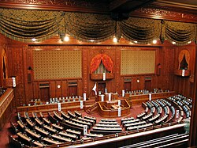

🗳️ Politisches System Japans
Japan ist eine konstitutionelle Monarchie mit einem parlamentarischen Regierungssystem. Der Tenno (Kaiser) ist das symbolische Staatsoberhaupt, während die tatsächliche politische Macht beim Parlament (Kokkai) liegt. Das Parlament besteht aus zwei Kammern: dem Unterhaus (Shūgiin) und dem Oberhaus (Sangiin).
🏛️ Regierung und Premierminister
Die Regierung wird vom Premierminister geführt, der vom Parlament gewählt wird. Der Premierminister ernennt Minister und leitet das Kabinett. Die aktuell dominierende Partei ist seit Jahrzehnten die Liberaldemokratische Partei (LDP), wobei Koalitionen mit kleineren Parteien üblich sind.
📜 Verfassung und Gewaltenteilung
Japans Verfassung von 1947 basiert auf demokratischen Prinzipien, Friedensverpflichtung (Artikel 9) und der Trennung der Gewalten: Legislative, Exekutive und Judikative. Sie legt den Schutz der Menschenrechte und die Unabhängigkeit der Justiz fest.

🔍 Interessante Fakten:
- Der Kaiser hat rein zeremonielle Funktionen.
- Japan hatte bisher nur männliche Kaiser.
- Die Wahlbeteiligung ist im internationalen Vergleich eher niedrig.
- Parteienlandschaft stark von der LDP geprägt.
Wusstest du schon?
Japan hat offiziell keine Armee, sondern nur Selbstverteidigungskräfte (JSDF), die trotz verfassungsrechtlicher Einschränkungen hochmodern ausgerüstet sind.
📈 Aktuelle politische Themen
Zu den wichtigsten innenpolitischen Herausforderungen zählen die alternde Bevölkerung, wirtschaftliche Reformen sowie Umwelt- und Energiepolitik. Außenpolitisch stehen die Beziehungen zu China, Südkorea und die Verteidigungszusammenarbeit mit den USA im Fokus.